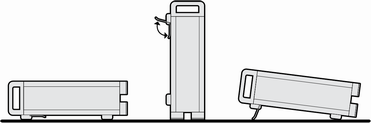
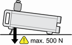
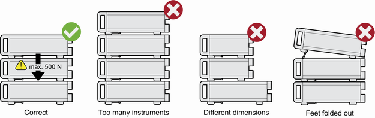

Standalone Operation
For standalone operation, place the instrument on a horizontal bench with even, flat surface. The instrument can be used in horizontal or vertical position, standing on its feet, or with the support feet on the bottom expanded.

The feet can fold in if they are not folded out completely or if the instrument is shifted. This can cause damage or injury.
- Fold the feet completely in or completely out to ensure stability of the instrument. Never shift the instrument when the feet are folded out.
- When the feet are folded out, do not work under the instrument or place anything underneath.
- The feet can break if they are overloaded. The overall load on the folded-out feet must not exceed 500 N.


A stack of instruments can tilt over and cause injury if not stacked correctly. Furthermore, the instruments at the bottom of the stack can be damaged due to the load imposed by the instruments on top.
Observe the following instructions when stacking instruments:
- Never stack more than three instruments. If you need to stack more than three instruments, install them in a rack.
- The overall load imposed on the lowest instrument must not exceed 500 N.
- All instruments must have the same dimensions (width and length).
- If the instruments have foldable feet, fold them in completely.
